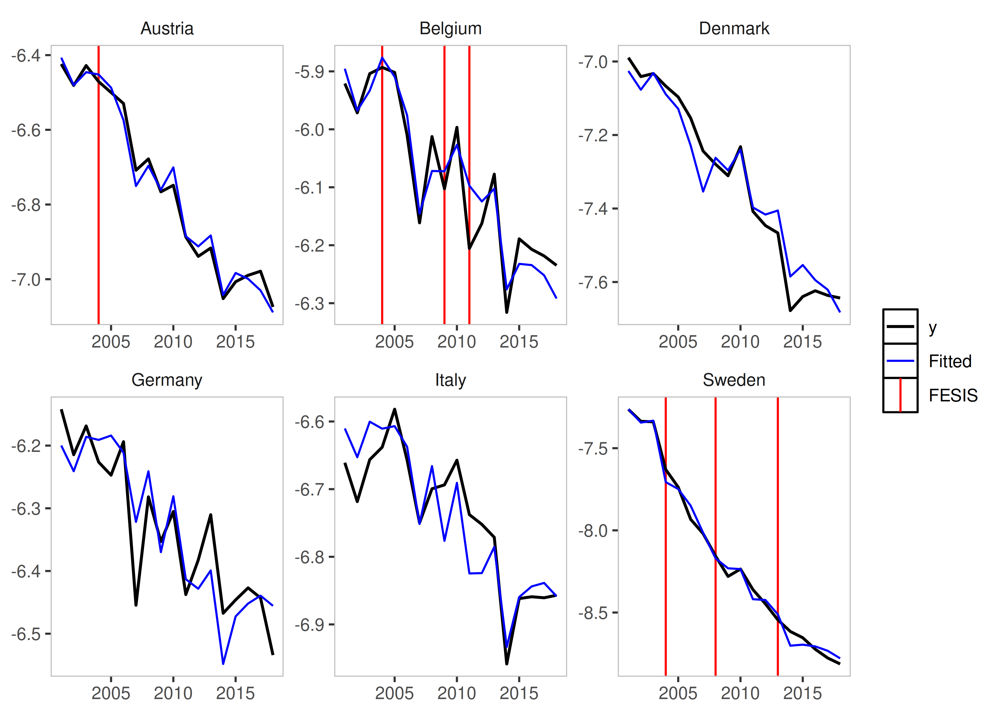
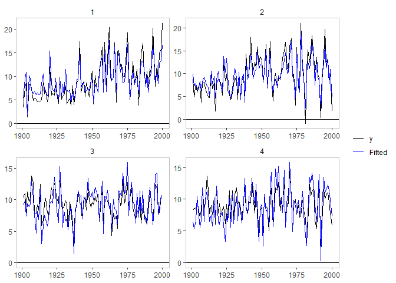
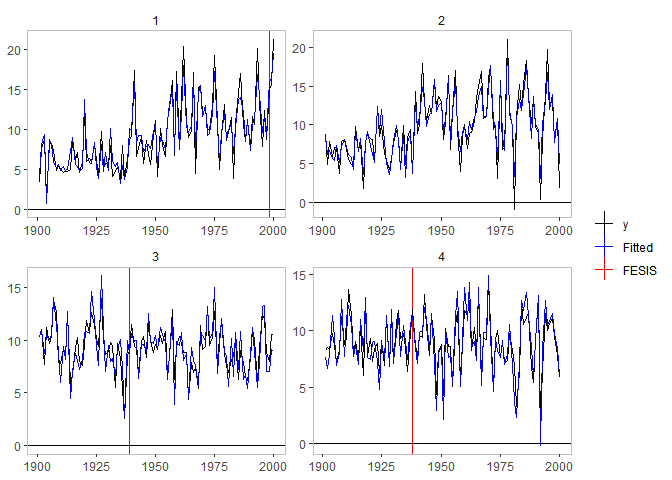
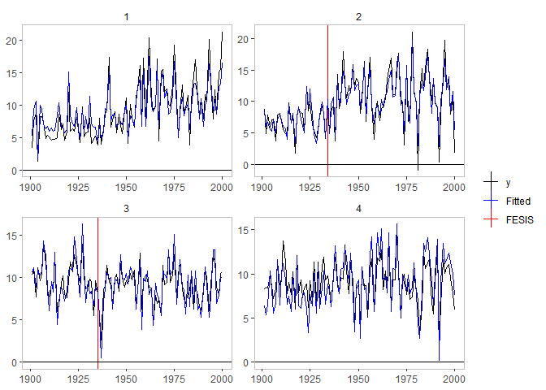
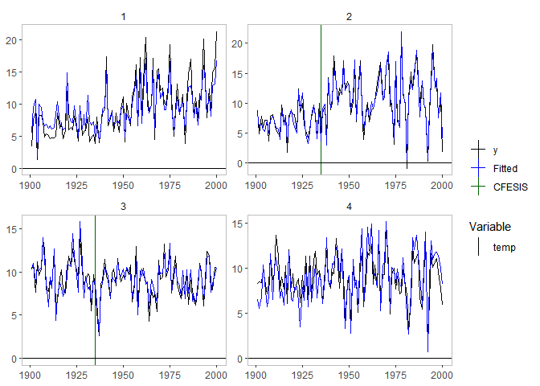

The getspanel package can be downloaded and installed from GitHub.
The package can be installed using:
# install.packages("devtools")
devtools::install_github("moritzpschwarz/getspanel")Once installed we need to load the library:
Currently the package is called getspanel to align with the gets package, but it’s main function of course remains the isatpanel function.
A quick overview over what has changed:
We can now use the function approach as well as the traditional gets approach. This means that we can specify a model using
yandmxregas well astimeandidas vectors, but we can now also simply supply adata.frameand afunctionin the formy ~ x + z + I(x^2)to e.g. specify polynomials. This means we will then need anindexargument, which specifies theThe
arargument now worksWe can now use the
fixestpackage to speed up model estimation with largei(for short panels, the default method is still faster).The package can be activated using the newengineargument.Using the
fixestpackage also allows us to calculate clustered standard errors.We can now be certain that unbalanced panels would work as intended, which was not the case before.
The
mxbreakandbreak.methodarguments have been removed. Instead the function now produces the break matrix itself. This now implements the following saturation methods in a user friendly way:iis: Impulse Indicator Saturation
jsis: Joint Step Indicator Saturation (Common Breaks over time)
csis: Coefficient Step Indicator Saturation (Common Coefficient Breaks over time)
fesis: Fixed Effect Step Indicator Saturation (Breaks in the Group Fixed Effect over time)
cfesis: Coefficient Fixed Effect Step Indicator Saturation (Breaks in the coefficient for each individual)
The isatpanel function
We first load the artificially created data1.
data("pandata_simulated")
head(pandata_simulated)
#> year country gdp temp country_1 country_2 country_3 country_4
#> 1 1901 1 3.359053 0.7929343 1 0 0 0
#> 2 1902 1 7.591011 2.2774292 1 0 0 0
#> 3 1903 1 8.747489 3.0844412 1 0 0 0
#> 4 1904 1 1.409240 -0.3456977 1 0 0 0
#> 5 1905 1 8.275691 2.4291247 1 0 0 0
#> 6 1906 1 8.165557 2.5060559 1 0 0 0
#> const
#> 1 1
#> 2 1
#> 3 1
#> 4 1
#> 5 1
#> 6 1Let’s look at how we input what we want to model. Each isatpanel command takes:
Basics
- A specification of the source data, the group and time variable and the group-time characteristics. This can be entered into the function in two ways:
In the gets package style i.e. using vectors and matrices to specify
y,mxreg,timeandidBut also in a form that resembles the
lmandplmspecification i.e. inputting adata.frame(ormatrixortibble), aformulaargument as well as character vectors forindex(in the formc("group_variable_name", "time_variable_name"))
- A an argument for the Fixed Effect Specification using
effect.
This already means that the following two commands will give the same result:
Using the new method
is_lm <- isatpanel(data = pandata_simulated,
formula = gdp ~ temp,
index = c("country","year"),
effect = "twoways",
fesis = TRUE)Using the traditional method
is_gets <- isatpanel(y = pandata_simulated$gdp,
mxreg = pandata_simulated$temp,
time = pandata_simulated$year,
id = pandata_simulated$country,
effect = "twoways",
fesis = TRUE)From here onwards, I will use the lm notation.
Plotting
We can plot these simply using the default plotting methods (rely on the ggplot2 package):
plot(is_lm)
plot_grid(is_lm)
#> Error in data.frame(name = names(coef(x$isatpanel.result)), coef = coef(x$isatpanel.result)): arguments imply differing number of rows: 0, 107
plot_counterfactual(is_lm)
#> Error in UseMethod("vcov"): no applicable method for 'vcov' applied to an object of class "isat"Saturation Methods
Impulse Indicator Saturation
This argument works just as in the gets package. The method simply adds a 0 and 1 dummy for each observation.
Simply set iis = TRUE.
iis_example <- isatpanel(data = pandata_simulated,
formula = gdp ~ temp,
index = c("country","year"),
effect = "twoways",
iis = TRUE)
plot(iis_example)
Step Indicator Saturation
Traditional Step Indicator Saturation does not make sense in a panel setting. Therefore, the gets function of sis is disabled.
Joint Step Indicator Saturation
It is possible, however, to consider Step Indicator Saturation with common breaks across individuals. Such indicators would be collinear, if effects = c("twoways") or effects = c("time") i.e. if Time Fixed Effects are included.
If, however, effect = "individual" then we can use jsis = TRUE to select over all individual time fixed effects.
jsis_example <- isatpanel(data = pandata_simulated,
formula = gdp ~ temp,
index = c("country","year"),
effect = "twoways",
jsis = TRUE)
plot(jsis_example)
#> Error in `FUN()`:
#> ! Aesthetic must be a one-sided formula, call, name, or constant.Coefficient Step Indicator Saturation
Note: This method has only been tested using the lm implementation (using data, formula, and index).
This method allows detection of coefficient breaks that are common across all groups. It is the interaction between jsis and the relevant coefficient.
To illustrate this, as well as the advantages of using the lm approach, we include a non-linear term of the temperature variable using I(temp^2):
csis_example <- isatpanel(data = pandata_simulated,
formula = gdp ~ temp + I(temp^2),
index = c("country","year"),
effect = "twoways",
csis = TRUE)
plot(csis_example)
By default, all coefficients will be interacted and added to the indicator list - but his can be controlled using the csis_var, which takes a character vector of column names i.e. csis_var = "temp".
Fixed Effect Step Indicator Saturation
This is equivalent to supplying a constant to the mxbreak argument in the old method. This essentially breaks the group-specific intercept i.e. the individual fixed effect.
fesis_example <- isatpanel(data = pandata_simulated,
formula = gdp ~ temp + I(temp^2),
index = c("country","year"),
effect = "twoways",
fesis = TRUE)
plot(fesis_example)
Similar to the csis_var idea, we can specify the fesis method for a subset of individuals as well using the fesis_id variable, which takes a character vector of individuals. In this case we can use e.g. fesis_id = c("2","3").
fesis_example2 <- isatpanel(data = pandata_simulated,
formula = gdp ~ temp + I(temp^2),
index = c("country","year"),
effect = "twoways",
fesis = TRUE,
fesis_id = c("2","3"))
plot(fesis_example2)
Coefficient Fixed Effect Step Indicator Saturation
This method combines the csis and the fesis approach and detects whether coefficients for individual units break over time.
This means we can also combine the subsetting in both the variable and in the individual units using cfesis_id and cfesis_var.
cfesis_example <- isatpanel(data = pandata_simulated,
formula = gdp ~ temp + I(temp^2),
index = c("country","year"),
effect = "twoways",
cfesis = TRUE,
cfesis_id = c("2","3"),
cfesis_var = "temp")
plot(cfesis_example)
The ar argument
It is now possible to specify an argument to include autoregressive coefficients, using the ar argument.
Post-selection robustness
The options for the robust.isatpanel are to use HAC Standard Errors, use a standard White Standard Error Correction (with the option of clustering the S.E. within groups or time):
robust.isatpanel(fesis_ar1_example, HAC = TRUE, robust = TRUE, cluster = "group")
#> $plm_object
#>
#> Model Formula: y ~ ar1 + temp + I.temp.2. + fesis1.1903 + fesis1.1904 + fesis1.1955 +
#> fesis2.1945
#> <environment: 0x56498da80488>
#>
#> Coefficients:
#> ar1 fesis1.1903 fesis1.1904 fesis1.1955 fesis2.1945
#> 0.076009 0.890032 -2.672392 5.230385 3.397009
#>
#>
#> $robust
#>
#> t test of coefficients:
#>
#> Estimate Std. Error t value Pr(>|t|)
#> ar1 0.076009 0.028275 2.6882 0.007601 **
#> fesis1.1903 0.890032 1.585091 0.5615 0.574890
#> fesis1.1904 -2.672392 0.494597 -5.4032 1.37e-07 ***
#> fesis1.1955 5.230385 0.102109 51.2235 < 2.2e-16 ***
#> fesis2.1945 3.397009 0.078524 43.2607 < 2.2e-16 ***
#> ---
#> Signif. codes: 0 '***' 0.001 '**' 0.01 '*' 0.05 '.' 0.1 ' ' 1
#>
#>
#> $HAC
#>
#> t test of coefficients:
#>
#> Estimate Std. Error t value Pr(>|t|)
#> id1 15.2620433 11.6507961 1.3100 0.1909934
#> id2 15.5447517 11.7224824 1.3261 0.1856070
#> id3 16.8465972 11.9668886 1.4078 0.1600089
#> id4 16.6462774 11.9167799 1.3969 0.1632573
#> time -0.0051529 0.0061259 -0.8412 0.4007831
#> ar1 0.1053763 0.0506036 2.0824 0.0379687 *
#> temp 0.7636035 0.5601232 1.3633 0.1735937
#> I.temp.2. 0.0070783 0.1335916 0.0530 0.9577715
#> fesis1.1903 0.0688169 0.3059775 0.2249 0.8221701
#> fesis1.1904 -0.4730760 0.4728207 -1.0005 0.3176793
#> fesis1.1955 4.3570763 0.6884788 6.3286 6.904e-10 ***
#> fesis2.1945 3.0348028 0.8779180 3.4568 0.0006077 ***
#> ---
#> Signif. codes: 0 '***' 0.001 '**' 0.01 '*' 0.05 '.' 0.1 ' ' 1The engine argument
Another new argument is also the engine argument. This allows us to use an external package to estimate our models. At this stage, the fixest package can be used.
This also means that we can now use an argument to cluster Standard Errors using cluster.
fixest_example <- isatpanel(data = pandata_simulated,
formula = gdp ~ temp,
index = c("country","year"),
effect = "twoways",
fesis = TRUE,
engine = "fixest",
cluster = "none")We can verify that, using no clustering of Standard Errors at all, using the fixest package does not change our estimates:
head(fixest_example$isatpanel.result$mean.results)Compared to the default estimator:
head(is_lm$isatpanel.result$mean.results)However, changing the cluster specification of course does. The Standard Error correction with it’s current implementation is not valid, so allows for many more indicators than true - therefore clustering is therefore not recommended.
fixest_example_cluster <- isatpanel(data = pandata_simulated,
formula = gdp ~ temp + I(temp^2),
index = c("country","year"),
effect = "twoways",
fesis = TRUE,
engine = "fixest",
cluster = "individual")
plot(fixest_example_cluster)